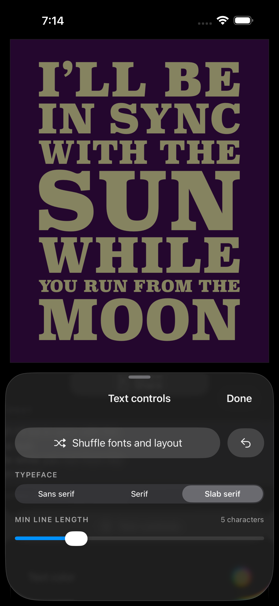
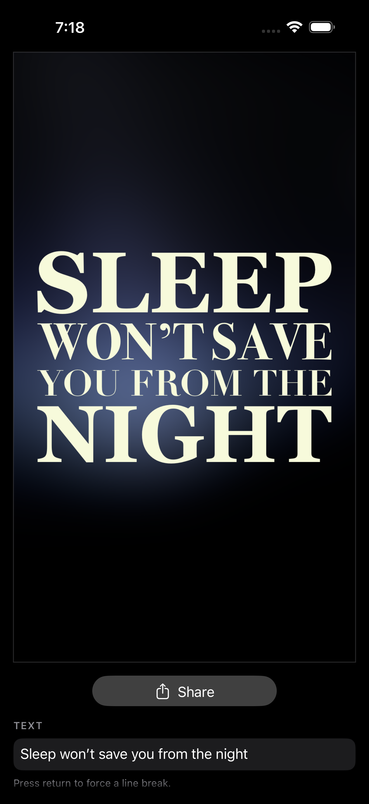

Luke Bradford · October 2026
Justifying type to the pixel
Every line the same width, each line's size set by how much text it holds. The math is one line. Making the edges actually straight took the rest.
You've seen the look on old letterpress posters and hand-painted signs: a phrase set as a solid rectangle of type. Short lines are huge, long lines are small, and both edges are perfectly straight. A designer does it by hand in a few minutes per poster. I wanted it to happen as you type, so I wrote a small layout engine for it. Here's how it works, including the parts that turned out to be harder than they looked.


One line: the size is a closed form
Rendered text width is linear in font size. So you don't need to search for the size that fills a target width W. Measure the line once at a reference size (100pt), and the answer is a ratio:
w0 = width(text, font, 100pt)
size = 100 · W / w0That single rule is the look. A line with a few short words gets a large size, and a line with many words gets a small one. Everything else is clamping:
- Too big (a short line would exceed 72% of
Win size): cap the size and fill the leftover with uniform letter-spacing,kern = (W − widthAtCap) / (glyphs − 1). - Too few gaps to track (a lone "A" has zero gaps, "OF" has one): capping would leave empty space at the sides, so grow past the cap with maximum tracking sharing the work. Solve
w0·s/100 + 0.45·s·gaps = Wfors. No line is ever narrower than the block. - Too small (a long line under 7.5% of
W): keep it. It still fills the width, but it's flagged so the line breaker learns to avoid it.
One detail matters a lot: the kern is applied to every glyph except the last. Kern after the final glyph adds invisible width on the right, and the right edge drifts.
The bug: justified boxes, ragged pixels
The first version measured width the usual way, as the typographic advance (what NSAttributedString.size() returns). Every line's box was exactly W wide and started at the same x. The edges were still visibly ragged, drifting 10–15 px at a 1080 px canvas.
The reason is that the advance includes side bearings: invisible space between the glyph's origin and its first inked pixel, and between its last inked pixel and the pen's end position. Bearings differ per font and per letter. Mix three typefaces across six lines, start them with different letters, and aligning the boxes leaves the ink misaligned.
The fix is to measure the ink itself. Core Text will return the bounds of the actual glyph outlines:
let line = CTLineCreateWithAttributedString(attr)
let bounds = CTLineGetBoundsWithOptions(line, .useGlyphPathBounds)
// bounds.minX = origin → leftmost inked pixel (can be negative)
// bounds.width = leftmost → rightmost inked pixelFit the ink width to W, then draw each line at x = left − inkLeftBearing so its first visible pixel lands exactly on the edge. The nice part is that nothing else changes. Ink width is still linear in size, and uniform kern on n − 1 gaps adds exactly kern · (n − 1) while leaving the first glyph in place. So the closed form still holds: measure once per (font, text) at 100pt, cache it, and scale.
Where to break: a cost function that is a house style
Line breaking looks like Knuth–Plass: dynamic programming over break points, minimizing a sum of per-line costs, O(n²) in words. The objective is inverted, though. TeX holds the font size fixed and penalizes stretched spaces. Here the size is free, since every line fills the width by construction, so the cost doesn't measure badness of fit. It encodes taste:
- A small charge per extra word on a line, so shorter lines win.
- +6 if a word of 7+ letters shares a line. Long words almost always want to stand alone.
- +10 for a one- or two-letter word alone on a line, because it can't be tracked out to full width.
- A quadratic charge for lines under a minimum letter count (a user slider, 3–12), and another for multi-word lines over 14 letters.
- A charge growing with the tracking a line needs, and +8 for a line that came out too small.
Two rules are hard constraints rather than costs, whenever they can be satisfied: a multi-word phrase never sits on a single line, and no line is shorter than the minimum. Everything else is soft. That split came from a bug. An earlier Shuffle treated the length caps as a huge cost rather than a filter, then narrowed its candidates to those with the fewest too-short lines. A whole phrase on one 43-letter line has zero too-short lines, so it won that round. With the minimum raised to 5, 62% of shuffles rendered the phrase as one enormous line. Now the rules that must never break are filters, and the matters of taste are costs.
All of these numbers were tuned by eye against real phrases, and they're the part of the engine I've changed most.
Shuffle: sampling good layouts, not random ones
The app has a Shuffle button that re-rolls the arrangement. Truly random breaks are mostly ugly. Always showing the optimum is boring. So Shuffle:
- enumerates every partition that satisfies the hard rules (up to 12 lines, capped at 4,000 candidates),
- adds the DP optimum, and
- samples with a softmax over cost:
weight ∝ exp(−(cost − min) / T), withT = 2.
Every line's cost is computed once into a table first, because measuring text dominates the runtime and lines repeat across thousands of partitions. The temperature is the variety dial. Raise it and you get stranger layouts; lower it and you see the optimum over and over. Each line then gets a font from a scheme (for example, a condensed Helvetica, a condensed Futura, and Avenir mixed down the block), and those differing widths are why exact ink measurement matters.
A known approximation: the breaker estimates sizes with one reference font, and fonts are assigned per line afterwards. Different faces have different widths, so the chosen breaks are optimal for a font that isn't quite the one drawn. In practice it hasn't visibly mattered, but it's the first thing I'd fix with more time.
Leading: measure the descenders too
Lines are packed with one equal gap, measured from baseline to the next line's cap top. That fails as soon as a line contains a J, a Q, or a comma. The descender drops below the baseline and nearly touches the line below. Opening the whole block up to clear the deepest descender makes every other gap look loose.
Instead, the engine measures each line's ink above and below its baseline (same glyph-path bounds, still linear in size) and sizes the single shared gap from the worst adjacent pair:
intrusion(i) = inkDescent(i) + max(0, inkAscent(i+1) − capHeight(i+1))
extender = inkDescent(i) > 5% of cap height // a real J or Q tail, not overshoot
margin(i) = extender ? baseGap / 4 : baseGap
gap = max over i of (intrusion(i) + margin(i))The 5% threshold ignores the optical overshoot that round letters like O and S have below the baseline. The quarter margin lets a real descender tuck in close instead of pushing the whole block apart. If the finished block is taller than the canvas, everything (sizes, kern, and gap) is scaled uniformly, so the block stays flush, just narrower.
What it adds up to
The whole engine is about 800 lines of Swift: a tokenizer, the breaker, the fitter, a measurer with a cache, and the vertical layout. Nothing in it is sophisticated on its own. What made the difference was choosing the right measurement: ink instead of advance, both horizontally and vertically. Most of the work was finding the places where "the box" and "what you see" disagree, and siding with what you see.